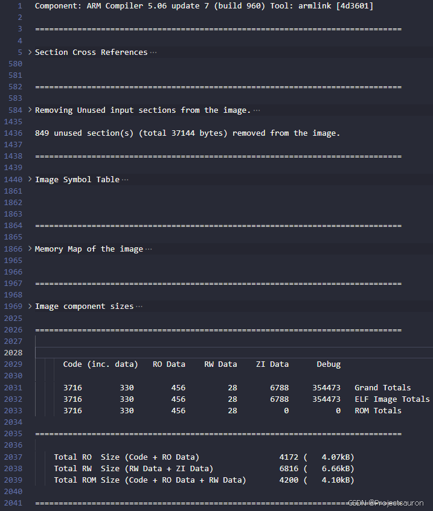
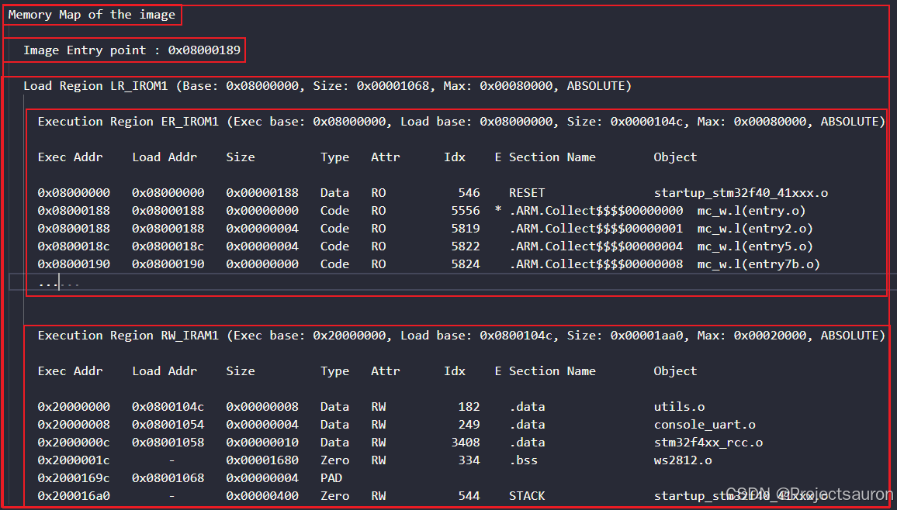

STM32 map 文件浅析
[toc]
一、概述
.map 文件是编译器链接时生成的一个文件，它主要包含了交叉链接信息。通过 .map 文件，我们可以知道整个工程的函数调用关系、FLASH 和 RAM 占用情况及其详细汇总信息，能具体到单个源文件（.c/.s）的占用情况，根据这些信息，我们可以对代码进行优化。.map 文件可以分为以下 5 个组成部分：
- 程序段交叉引用关系（
Section Cross References） - 删除映像未使用的程序段（
Removing Unused input sections from the image） - 映像符号表（
Image Symbol Table） - 映像内存分布图（
Memory Map of the image） - 映像组件大小（
Image component sizes）

我们在 Keil 中最常见的就是在编译之后，编译窗口会显示类似如下一段关于程序和数据大小的信息：
这一段提示信息其实是汇总了程序和数据的信息，这些信息其实是单个模块汇总而成，在 .map 文件里有详细列表。
.map 文件输出信息的配置位于：Project -> Options for Target -> Listing，如下图：

主要包含配置：
Memory Map：内存映射Callgraph：图像映射Symbols：符号Cross Reference：交叉引用Size Info：大小信息Totals Info：统计信息Unused Section Info：未调用模块信息Veneers Info：装饰信息
我们可根据自己情况，想要输出什么信息，勾选对应信息即可。
接下来将针对 .map 文件的五部分内容进行讲解。
二、Section Cross References
这部分内容描述了各个文件（.c/.s 等）之间函数（程序段）的调用关系，如下图所示：

比如下面这段：
1 | |
表示的意思是：board.c 文件中的 board_lowlevel_init 函数调用了 stm32f4xx_rcc.c 文件中的 RCC_AHB1PeriphClockCmd 函数。
i.board_lowlevel_init表示board_lowlevel_init函数的入口地址，同理i.RCC_AHB1PeriphClockCmd表示RCC_AHB1PeriphClockCmd的入口地址
board.o是board.c源文件生成的目标文件模块
三、Removing Unused input sections from the image
这部分内容描述了工程中由于未被调用而被删除的冗余程序段（函数/数据）：
在结尾还列出了一个统计数据，表示共移除l 849 个程序段，共 37144 字节。
四、Memory Map of the image
映像符号表（Image Symbol Table）描述了被引用的各个符号（程序段/数据）在存储器中的存储地址、类型、大小等信息。映像符号表分为两类：本地符号（Local Symbols）和全局符号（Global Symbols）。
1、Local Symbols
本地符号（Local Symbols）记录了用static 声明的全局变量地址和大小，c 文件中函数的地址和用static 声明的函数代码大小，汇编文件中的标号地址（作用域：限本文件），见下：

下面红框处，表示 stm32f4x_dma.c 文件中的 DMA_ClearFlag 函数的入口地址为 0x080001ec，类型为：Section（程序段）
，大小为 0。
因为：
i.sys_stm32_clock_init仅仅表示sys_stm32_clock_init函数入口地址，并不是指令，所以没有大小。在全局符号段，会列出sys_stm32_clock_init函数的大小。

2、全局符号（Global Symbols）
全局符号（Global Symbols）记录了全局变量的地址和大小，C 文件中函数的地址及其代码大小，汇编文件中的标号地址（作用域：全工程），见下：
Symbol Name：符号名称，名称命名及分类请看最后给出的官方参考文档。Value：存储对应的地址，大家会发现有0x0800xxxx、0x2000xxxx这样的地址。0x0800xxxx指存储在 FLASH 里面的代码、变量等。0x2000xxxx指存储在内存 RAM 中的变量 Data 等。Ov Type：符号对应的类型。符号类型大概有几种：Number、Section、Thumb Code、Data等。Size：存储大小，就是当前行Symbol占用大小。Object(Section)：段目标，这里一般指所在模块（源文件）。
图中红框框处部分，表示 stm32f4x_dma.c 文件中的 DMA_ClearFlag 函数的入口地址为：0x080001ed，类型为：Thumb Code（程序段）
，大小为 38 字节。
注意，此处的地址用的
0x08002bc9，和上一节的0x080001ec地址不符，这是因为 ARM 规定 Thumb 指令集的所有指令（Thumb 指令集更节省空间），其最低位必须为 1，0x080001ed=0x080001ec+ 1，所以才会有 2 个不同的地址，且总是差 1，实际上就是同一个函数。
五、Image Symbol Table
映像文件分为加载域（Load Region）和运行域（Execution Region），一个加载域必须有至少一个运行域（可以有多个运行域），而一个程序又可以有多个加载域。加载域为映像程序的实际存储区域，而运行域则是 MCU 上电后的运行状态。加载域和运行域的简化关系（这里仅表示一个加载域的情况）图如下图：

有关内存方面的内容可以参考：单片机内存区域划分
由图可知，RW 区也是存放在 ROM（FLASH）里面的，在执行 main 函数之前，RW（有初值且不为 0 的变量）数据会被拷贝到 RAM 区，同时还会在 RAM 里面创建 ZI 区（初始化为 0 的变量）。

Image Entry point : 0x08000189 表示映射入口地址。
Load Region LR_IROM1 (Base: 0x08000000, Size: 0x00001068, Max: 0x00080000, ABSOLUTE) 表示加载区域位于 LR_IROM1 开始地址0x08000000，大小有 0x00001068，这块区域最大为 0x00080000
执行区域有两段：
Execution Region ER_IROM1：在内部 SRAM 运行域，所有 RAM（包括 RW 和 ZI）都是放在这个运行域里面Execution Region RW_IRAM1：在内部FLASH 运行域，所有需要放内部 FLASH 的代码，都应该放到这个运行域里面
这个区域，其实就是对应我们目标配置中的区域，如下所示：

Exec Addr：执行地址Load Addr：加载地址Size：存储大小Type：类型Data：数据类型Code：代码类Zero：未初始化变量类型PAD：这个类型在 map 文件中放在这个位置，其实它不能算这里的类型。要翻译的话，只能说的“补充类型”。ARM 处理器是 32 位的，如果定义一个 8 位或者 16 位变量就会剩余一部分，这里就是指的“补充”的那部分，会发现后面的其他几个选项都没有对应的值。
- Attr：属性
RO：存储在 ROM 中的段RW：存储在 RAM 中的段
Section Name：段名。这里也可以说为入口分类名，大概包含：RESET、ARM、.text、i、.data、.bss、HEAP、STACK等。Object：目标
六、Image component sizes
映像组件大小（Image component sizes）给出了整个映像所有代码（.o）占用空间的汇总信息，对我们比较有用，如图所示：
Code：指代码的大小；RO-data：指除了内联数据(inline data)之外的常量数据；RW-data：指可读写（RW）、已初始化的变量数据；ZI-data：指未初始化（ZI）的变量数据；Debug：表示调试数据所占的空间大小，如调试输入节及符号和字符串。Object Totals：表示以上部分链接到一起后，所占映像空间的大小。(incl.Generated)：表示链接器生产的映像内容大小，它包含在Object Totals里面了，这里仅仅是单独列出，我们一般不需要关心。(incl.Padding:：表示链接器根据需要插入填充以保证字节对齐的数据所占空间的大小，它也包含在Object Totals里面了，这里单独列出，一般无需关心。
Code、Ro-data：位于FLASH中；RW-data、ZI-data：位于RAM中；RW-data已初始化的数据会存储在Flash中，上电会从FLASH搬移至RAM。
关系如下：$$
RO Size = Code + RO Data\
RW Size = RW Data + ZI Data \
ROM Size = Code + RO Data + RW Data
$$

这里表示被提取的库成员（.lib 添加到映像中的部分所占空间大小。各项意义同前面提到的说明。我们一般只用看 Library Totals 来分析库所占空间的大小即可。
Grand Totals：表示整个映像所占空间大小。ELF Image Totals：表示 ELF 可执行链接格式映像文件的大小，一般和Grand Totals一样大小。ROM Totals：表示整个映像所需要的ROM空间大小，不含ZI和Debug数据。Total RO Size：表示Code和RO数据所占空间大小，本例程为：4172 字节。Total RW Size：表示RW和ZI数据所占空间大小，即本映像所需SRAM空间的大小，本例程为：6816 字节。Total ROM Size：表示Code、RO和RW数据所占空间大小，即本映像所需FLASH空间的大小，本例程为：4200 字节。